Sorobi – abac și calcul mental
Lecții de soroban pentru copii
Un soroban pe ecran: copilul mută bilele cu degetul și simte un clic pentru fiecare bilă.
Descarcă din App Store
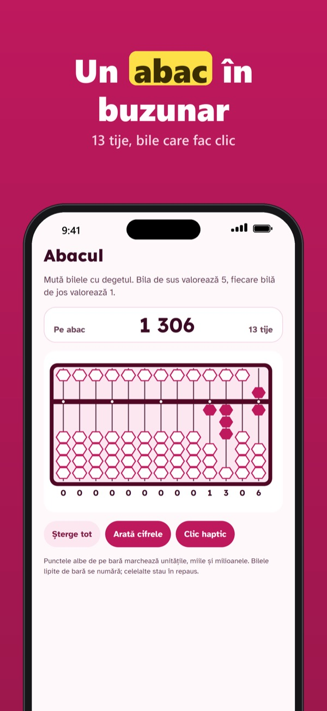
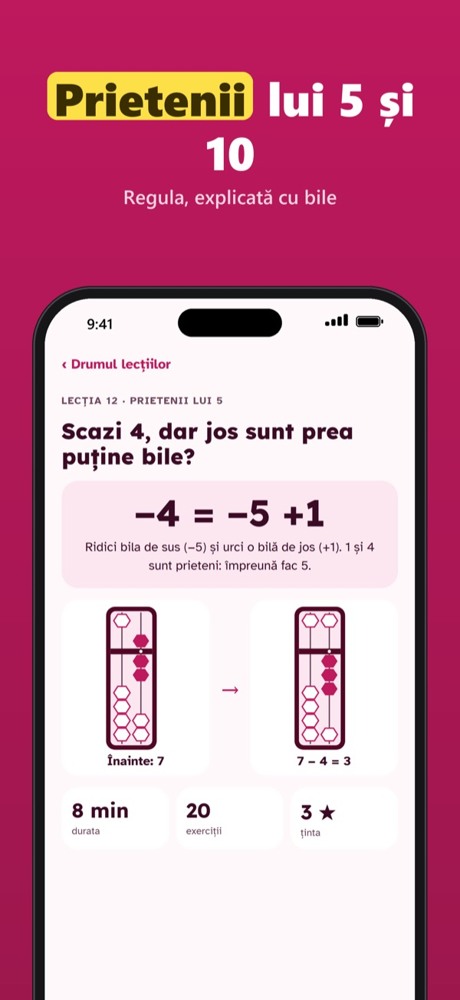
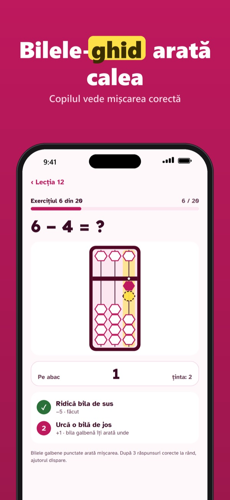
- Soroban tactil, cu clic haptic la fiecare bilă
- Programa noastră de 60 de lecții scurte: prietenii lui 5, prietenii lui 10, numere cu mai multe cifre, înmulțire
- Bilele-fantomă arată mișcarea următoare în exercițiile ghidate
- Flash anzan: cifre, număr de termeni și viteză la alegere
- Ascultă și calculează: numerele citite de vocea integrată a iPhone-ului
- Profil pentru fiecare copil, progresul pentru părinți și un raport PDF de trimis
Sorobi Plus este o cumpărare unică. Fără abonament, fără reclame. Cumpărările și setările sunt protejate de o verificare pentru adulți.
Sorobi este un instrument de exercițiu pentru acasă și nu înlocuiește un curs sau profesorul.
Asistență · Confidențialitate
Sorobi – liczydło i liczenie
Lekcje sorobanu dla dzieci
Soroban na ekranie: dziecko przesuwa koraliki palcem i czuje kliknięcie przy każdym koraliku.
Pobierz z App Store
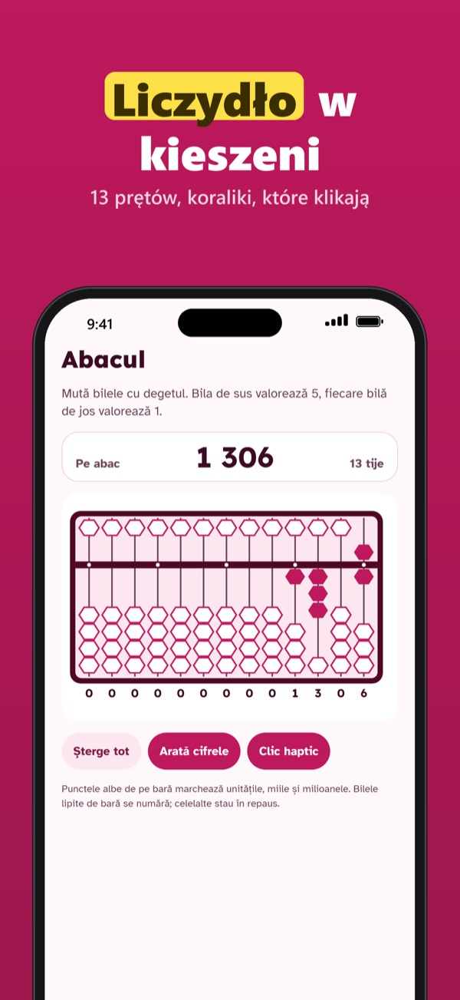
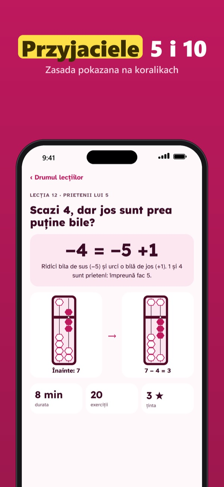
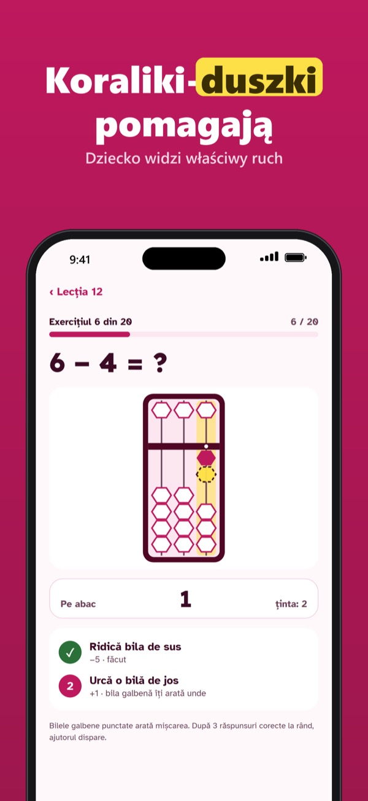
- Dotykowy soroban z haptycznym kliknięciem każdego koralika
- Nasz własny program 60 krótkich lekcji: przyjaciele 5, przyjaciele 10, liczby wielocyfrowe, mnożenie
- Koraliki-duszki pokazują następny ruch w ćwiczeniach z podpowiedzią
- Flash anzan: cyfry, liczba składników i tempo do wyboru
- Słuchaj i licz: liczby czytane wbudowanym głosem iPhone’a
- Profil dla każdego dziecka, postępy dla rodziców i raport PDF do wysłania
Sorobi Plus to jednorazowy zakup. Bez subskrypcji, bez reklam. Zakupy i ustawienia chroni weryfikacja dorosłego.
Sorobi to narzędzie do ćwiczeń w domu i nie zastępuje kursu ani nauczyciela.
Pomoc · Prywatność
Sorobi – abaco e calcolo mentale
Lezioni di soroban per bambini
Un soroban sullo schermo: il bambino sposta le perline con il dito e sente un clic per ogni perlina.
Scarica su App Store
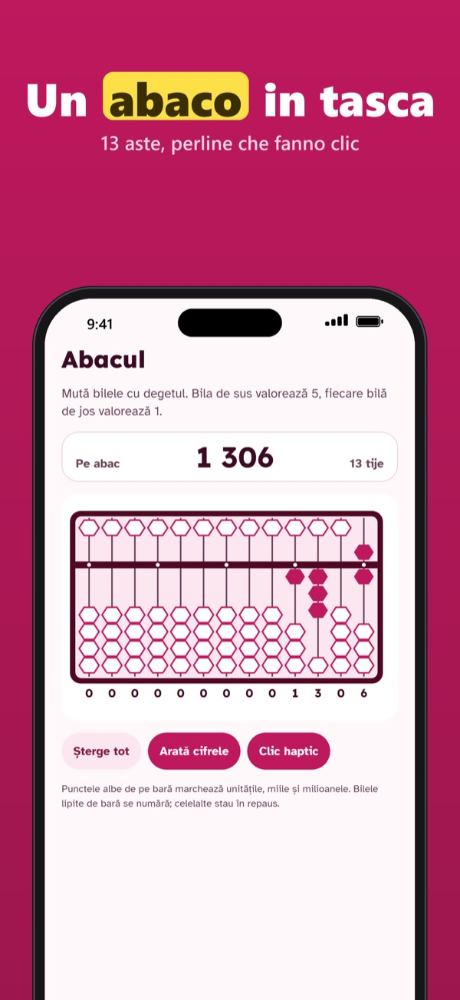
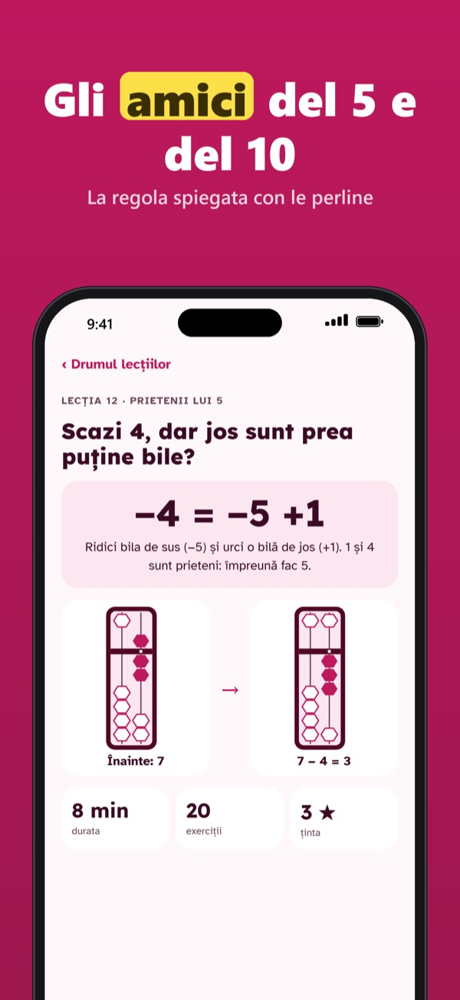
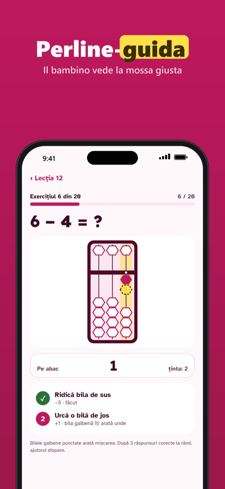
- Soroban touch con clic aptico a ogni perlina
- Il nostro percorso di 60 lezioni brevi: amici del 5, amici del 10, numeri a più cifre, moltiplicazione
- Le perline-guida mostrano la mossa successiva negli esercizi guidati
- Flash anzan: cifre, numero di addendi e velocità a scelta
- Ascolta e calcola: numeri letti dalla voce integrata dell’iPhone
- Un profilo per ogni bambino, progressi per i genitori e un resoconto PDF da inviare
Sorobi Plus è un acquisto unico. Nessun abbonamento, nessuna pubblicità. Acquisti e impostazioni sono protetti da una verifica adulti.
Sorobi è uno strumento per esercitarsi a casa e non sostituisce un corso o l’insegnante.
Assistenza · Privacy
Sorobi – άβακας και νοερός υπολογισμός
Μαθήματα soroban για παιδιά
Ένα soroban στην οθόνη: το παιδί μετακινεί τις χάντρες με το δάχτυλο και νιώθει ένα κλικ σε κάθε χάντρα.
Λήψη από το App Store
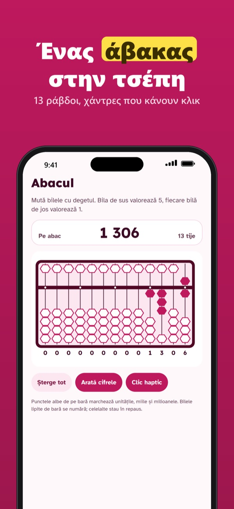
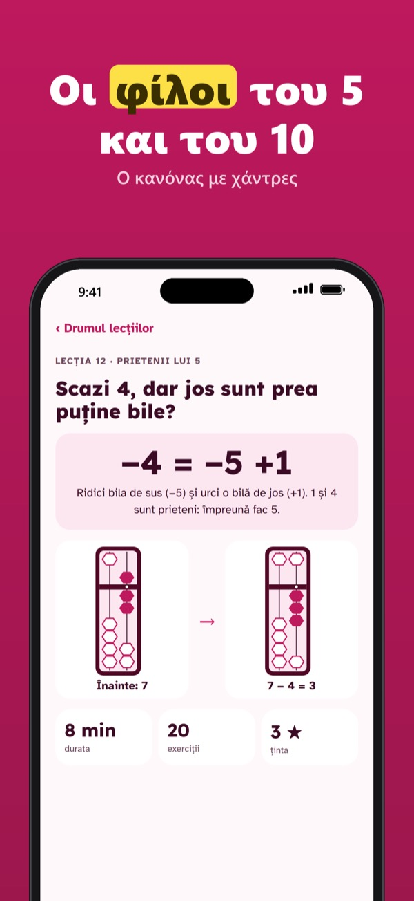
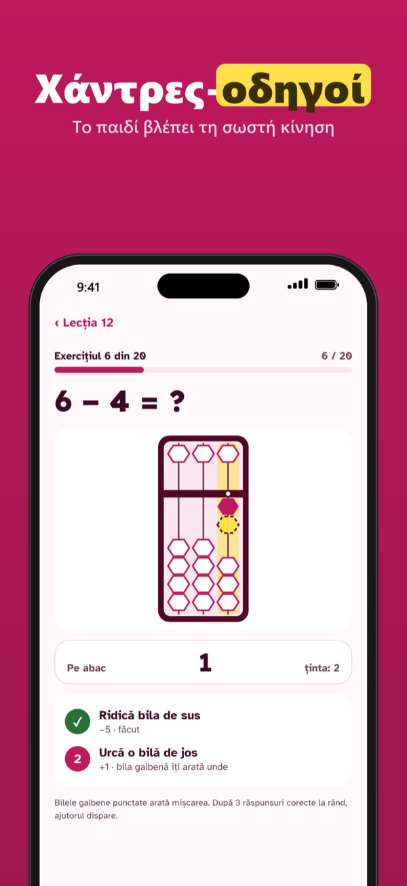
- Soroban αφής με απτικό κλικ σε κάθε χάντρα
- Το δικό μας πρόγραμμα 60 σύντομων μαθημάτων: φίλοι του 5, φίλοι του 10, πολυψήφιοι αριθμοί, πολλαπλασιασμός
- Οι χάντρες-οδηγοί δείχνουν την επόμενη κίνηση στις καθοδηγούμενες ασκήσεις
- Flash anzan: ψηφία, πλήθος αριθμών και ταχύτητα κατά επιλογή
- Άκου και υπολόγισε: αριθμοί που διαβάζει η ενσωματωμένη φωνή του iPhone
- Προφίλ για κάθε παιδί, πρόοδος για τους γονείς και αναφορά PDF για αποστολή
Το Sorobi Plus είναι εφάπαξ αγορά. Χωρίς συνδρομή, χωρίς διαφημίσεις. Οι αγορές και οι ρυθμίσεις προστατεύονται με έλεγχο ενήλικα.
Το Sorobi είναι εργαλείο εξάσκησης για το σπίτι και δεν αντικαθιστά ένα μάθημα ή τον δάσκαλο.
Υποστήριξη · Απόρρητο
Sorobi – počítadlo a počítání
Lekce sorobanu pro děti
Soroban na obrazovce: dítě posouvá kuličky prstem a u každé kuličky ucítí cvaknutí.
Stáhnout v App Store
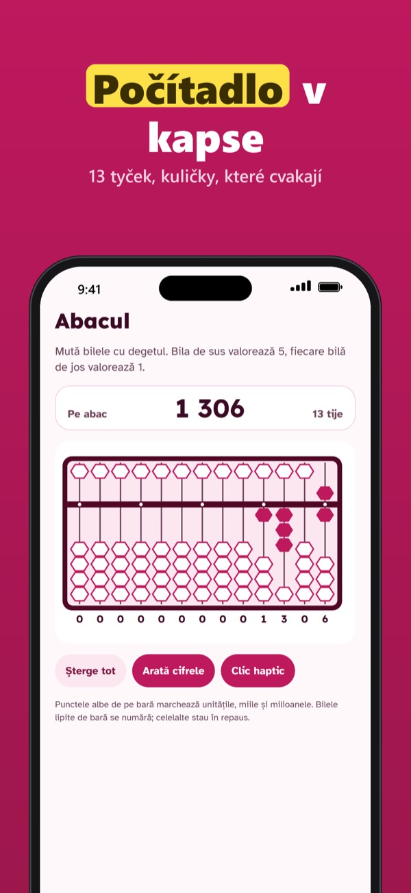
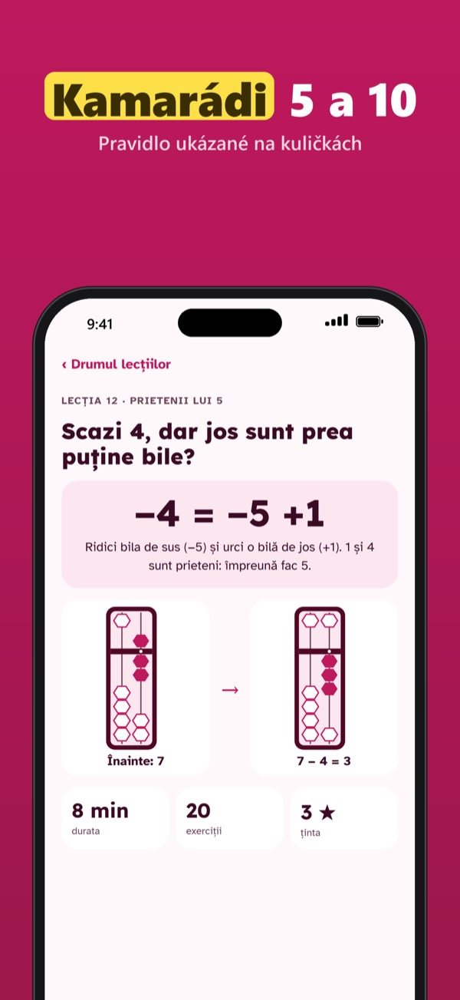
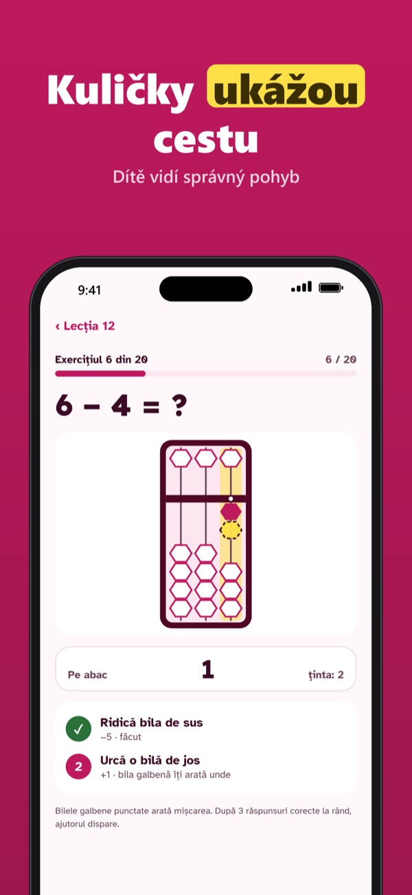
- Dotykový soroban s haptickým cvaknutím každé kuličky
- Vlastní osnova 60 krátkých lekcí: kamarádi 5, kamarádi 10, víceciferná čísla, násobení
- Kuličky-duchové ukazují další tah v řízených cvičeních
- Flash anzan: číslice, počet čísel a rychlost na výběr
- Poslouchej a počítej: čísla čte vestavěný hlas iPhonu
- Profil pro každé dítě, pokrok pro rodiče a přehled v PDF k odeslání
Sorobi Plus je jednorázový nákup. Žádné předplatné, žádné reklamy. Nákupy a nastavení chrání ověření dospělého.
Sorobi je nástroj na procvičování doma a nenahrazuje kroužek ani učitele.
Podpora · Soukromí
Sorobi – abakusz és fejszámolás
Soroban leckék gyerekeknek
Soroban a képernyőn: a gyerek az ujjával tolja a gyöngyöket, és minden gyöngynél kattanást érez.
Letöltés az App Store-ból
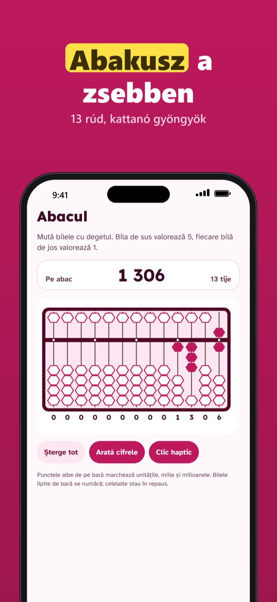
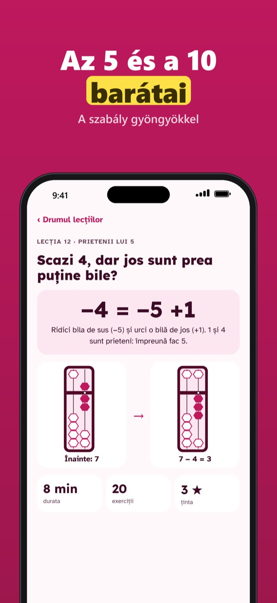
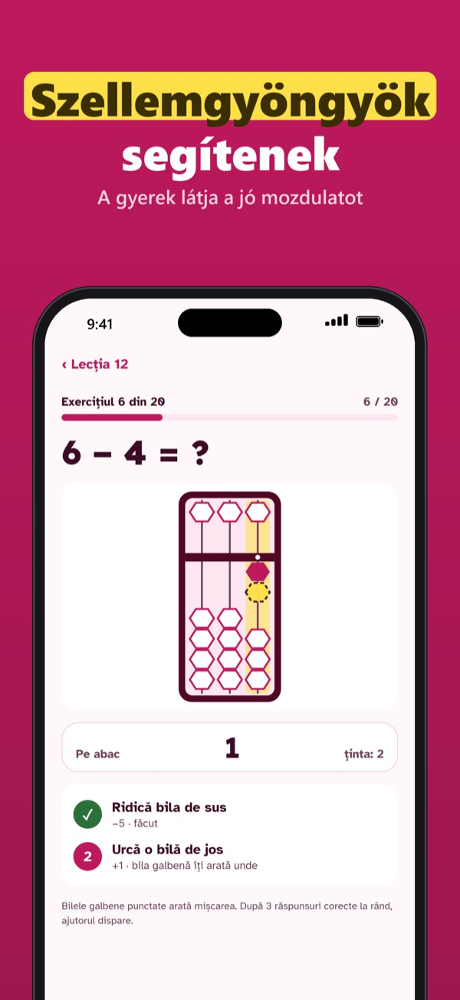
- Érintős soroban, minden gyöngynél haptikus kattanással
- Saját, 60 rövid leckéből álló tananyag: az 5 barátai, a 10 barátai, többjegyű számok, szorzás
- A szellemgyöngyök mutatják a következő mozdulatot a vezetett gyakorlatokban
- Flash anzan: számjegyek, tagok száma és tempó tetszés szerint
- Hallgasd és számolj: a számokat az iPhone beépített hangja olvassa fel
- Profil minden gyereknek, haladás a szülőknek és küldhető PDF jelentés
A Sorobi Plus egyszeri vásárlás. Nincs előfizetés, nincs reklám. A vásárlásokat és a beállításokat felnőtt-ellenőrzés védi.
A Sorobi otthoni gyakorlóeszköz, nem helyettesíti a foglalkozást vagy a tanárt.
Támogatás · Adatvédelem
Sorobi – ábaco y cálculo mental
Lecciones de soroban para niños
Un soroban en la pantalla: el niño mueve las cuentas con el dedo y siente un clic en cada cuenta.
Descargar en el App Store
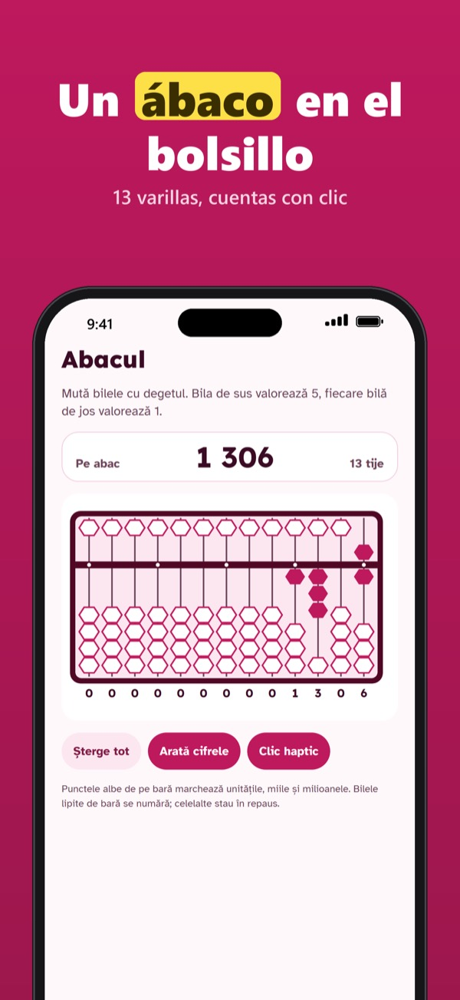
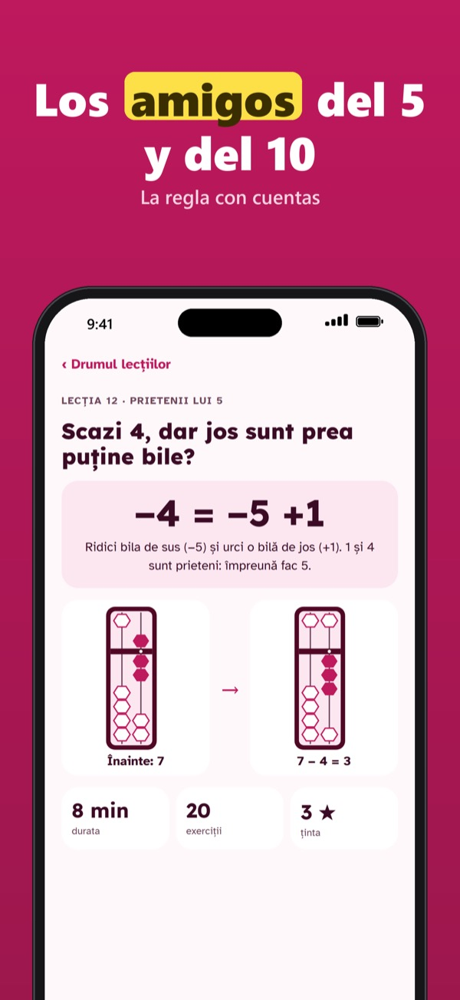
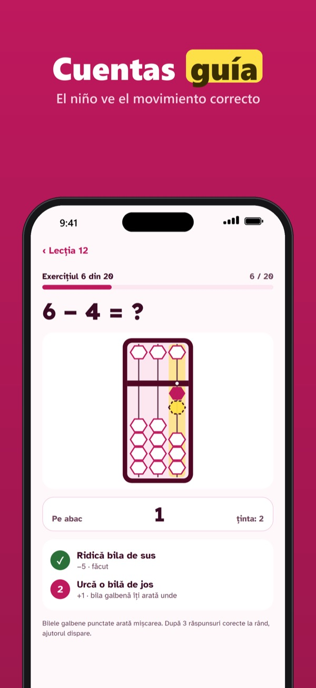
- Soroban táctil con clic háptico en cada cuenta
- Nuestro propio plan de 60 lecciones cortas: amigos del 5, amigos del 10, números de varias cifras, multiplicación
- Las cuentas guía muestran el siguiente movimiento en los ejercicios guiados
- Flash anzan: cifras, número de sumandos y velocidad a elegir
- Escucha y calcula: números leídos por la voz integrada del iPhone
- Un perfil para cada niño, progreso para los padres y un informe PDF para enviar
Sorobi Plus es una compra única. Sin suscripción, sin anuncios. Las compras y los ajustes están protegidos por un control de adultos.
Sorobi es una herramienta de práctica para casa y no sustituye a un curso ni al profesor.
Soporte · Privacidad
Sorobi – abacus and mental math
Soroban lessons for children
A soroban on the screen: the child moves the beads with a finger and feels a click for every bead.
Download on the App Store
- Touch soroban with a haptic click for every bead
- Our own curriculum of 60 short lessons: friends of 5, friends of 10, multi-digit numbers, multiplication
- Ghost beads show the next move in guided exercises
- Flash anzan: digits, number of terms and speed to choose
- Listen & calculate: numbers read aloud by the iPhone’s built-in voice
- A profile for each child, progress for parents and a PDF report to send
Sorobi Plus is a one-time purchase. No subscription, no ads. Purchases and settings are behind an adult check.
Sorobi is a practice tool for home and does not replace a course or a teacher.
Support · Privacy